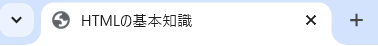

このページではWeb開発に必須なマークアップ言語であるHTMLとCSSについての基本的な知識をまとめました。
こまでにHTMLやCSSを使ったことのない人向けなので、実際に手を動かしながらぜひ勉強に役立ててください！
ページの最後にはクイズも解いてみましょう！
| タグ | 役割 | 使う場面 |
|---|---|---|
| <!DOCTYPE html> | HTMLのバージョンを指定（必ず最初に書く） | HTML5を使うとき |
| <html lang="ja"> | HTMLの全体を囲む | 言語設定もできる（ja なら日本語） |
| <head> | ページの情報（見えない部分）を設定 | タイトルや文字コードを指定 |
| <meta charset="UTF-8"> | 文字コードを指定（日本語が文字化けしないように） | ほぼ必ず使う |
| <title> | ページのタイトル | ブラウザのタブに表示される |
| <body> | 実際に画面に表示する部分 | ページの中身を作る |
HTML5は、HTMLの最新の仕様で、従来のHTML4に比べて
より意味を持ったタグ（セマンティック・タグ）が追加された。これにより、
コードの構造が明確になり、検索エンジンや支援技術（スクリーンリーダー）にも優しくなっている。
<article>：独立した記事や投稿などを表す<section>：文書内のセクション（区切り）を表す<header>：セクションやページのヘッダー部分<footer>：セクションやページのフッター部分<nav>：ナビゲーションリンクをまとめる<aside>：補足情報や関連情報などを表す<article> と <section>
<section>
<h2>ニュース</h2>
<article>
<h3>新製品の発表</h3>
<p>本日、新しい製品が発表されました。</p>
</article>
</section>
上記のように、<section> は文書の区切りを、<article> は記事のような独立した内容を表す。
| タグ | 役割 | 使う場面 |
|---|---|---|
| <h1>~<h6> | 見出し（h1が一番大きい） | ページタイトルやセクションの見出し |
| <p> | 段落（文章） | 普通の文章を書く |
| <br> | 改行 | 文章を途中で改行したいとき |
| <hr> | 横線（区切り線） | セクションの区切り |
<!DOCTYPE html>
<html lang="ja">
<head>
<meta charset="UTF-8">
<title>見出しと段落の例</title>
</head>
<body>
<h1>これはh1です</h1>
<h2>これはh2です</h2>
<h3>これはh3です</h3>
<p>これはpタグです。段落を表します。</p>
<p>これは<br>途中で<br>改行した文章です。</p>
<hr>
<p>ここから別のセクションのように見せたいときはhrタグで区切ります。</p>
</body>
</html>
| タグ | 役割 | 使う場面 |
|---|---|---|
| <ul> | 箇条書きリスト（順番なし） | メニューやリスト |
| <ol> | 番号付きリスト（順番あり） | 手順やランキング |
| <li> | リストの項目 | ulやol の中で使う |
<!DOCTYPE html>
<html lang="ja">
<head>
<meta charset="UTF-8">
<title>リストの例</title>
</head>
<body>
<h2>順番なしリスト（ul）</h2>
<ul class = "fruits">
<li>りんご</li>
<li>みかん</li>
<li>バナナ</li>
</ul>
<h2>番号付きリスト（ol）</h2>
<ol class = "schedule">
<li>起床</li>
<li>朝ごはん</li>
<li>学校へ行く</li>
</ol>
</body>
</html>
| タグ | 役割 | 使う場面 |
|---|---|---|
| <a href="URL"> | リンクを作る | 他のページやサイトへ飛ばす |
| <img src="画像のURL" alt="説明"> | 画像を表示する | 写真やアイコンを使う |
上の画像をスクリーンリーダーで読み込むと「空を飛ぶドローン」という音声として再生される。
<img src="drone.jpg" alt="空を飛ぶドローン">
| タグ | 役割 | 使う場面 |
|---|---|---|
| <table> | 表（テーブル）を作る | データを表で整理 |
| <tr> | 表の1行を作る | ″ |
| <td> | 表のセル（データ） | ″ |
| <th> | 見出しセル（太字） | ″ |
| タグ | 役割 | 使う場面 |
|---|---|---|
| <div> | ブロック（区切り） | ページをグループ分け |
| <span> | 文字を強調（インライン） | 文字の色を変えたいとき |
| <strong> | 太字・重要な意味を持たせる | 重要な部分を強調(強意) |
| <b> | 太字（<strong>と違い見た目だけ※1） | 文字の見た目を太くしたいとき |
| <em> | 斜体（強調） | ちょっとした強調 |
Emmet（エメット） は、HTMLやCSSを素早く書くための補完機能のことである。
ここでは、Emmetの使い方を紹介する。
! と入力して Enter を押すと、HTMLのひな形が自動生成される
タグ名 を入力して Tab を押すと、自動でタグが完成する
| 入力(Tabを押す前) | 出力(Tabを押した後) |
|---|---|
| h1 | <h1></h1> |
| p | <p></p> |
| ul>li*3 | <ul><li></li><li></li><li></li></ul> |
> を使うと ネスト（入れ子） したタグを一瞬で作れる
| 入力(Tabを押す前) | 出力(Tabを押した後) |
|---|---|
| div>h1+p | <div><h1></h1><p></p></div> |
<form> タグは、ユーザーからの入力（名前・メール・アンケートなど）を受け取ってサーバーに送信するためのHTML要素。
フォーム内には入力欄（<input>や<textarea>）、選択肢（<select>）、
送信ボタン（<button>）などを入れる。
<form> の action 属性は送信先のURLを指定。method は送信方法。通常は get か post。label を使うとアクセシビリティが向上する。<button type="submit"> または <input type="submit">。| 実際の記号 | 書くときのエスケープ表現 |
|---|---|
| < | < |
| > | > |
| & | & |
タグにclass名を定義しておくと、CSSでデザインするときなどに便利!
CSS（Cascading Style Sheets）は、HTMLで作った構造に「見た目のデザイン」を加えるための言語。
| 書き方 | 説明 |
|---|---|
| セレクタ { プロパティ: 値; } | 特定の要素にデザインを当てる基本構文 |
| p { color: red; } | 段落の文字色を赤にする |
| プロパティ | 意味 | 例 |
|---|---|---|
| color | 文字色 | color: blue; |
| background-color | 背景色 | background-color: yellow; |
| font-size | 文字の大きさ | font-size: 20px; |
| margin | 外側の余白 | margin: 10px; |
| padding | 内側の余白 | padding: 5px; |
| border | 枠線 | border: 1px solid black; |
外側の余白。要素の外にどれだけスペースを取るかを指定する。
内側の余白。要素の内側にどれだけスペースを取るかを指定する。
.example-box {
background-color: #f0f4f8;
border: 1px solid #ccc;
border-radius: 8px;
color :#333
}
/* marginの例 */
.margin-example {
margin: 40px;
}
/* paddingの例 */
.padding-example {
padding: 24px;
}
CSSでは、HTML要素に対してスタイルを指定するために「セレクタ」を使う。
#（シャープ記号）を使うと、id属性が特定の値を持つ要素にスタイルを適用できる。
class と違って、同じページに同じ id は基本的に1つだけ。
<p id="title">これは見出しです</p>#title {
color: blue;
font-size: 24px;
}上記のように、id="title" が付けられた段落は青色で大きな文字になる。
<p style="color:red;">）<style> タグ内で記述<link> タグで読み込む（おすすめ）CSSのコード例のように、HTML側で指定したクラス（example-box, margin-example, padding-example ）をCSS側で指定することができる
| プロパティ | 意味 | 例 |
|---|---|---|
| text-align | 文字の配置（左・中央・右） | text-align: center; |
| display | 要素の表示の仕方を変える | display: flex; |
| flexbox | 並び方や中央揃えを簡単に制御できる |
display: flex;
|
| hover | マウスを乗せたときのスタイル |
a:hover {
|
display プロパティについて
display プロパティは、HTML要素の表示方法（レイアウト）を制御するために使用される。以下は代表的な値とその説明。
| 値 | 説明 | 例 |
|---|---|---|
block |
要素はブロックレベルとして表示され、前後に改行が入る。 | <div>, <p>, <section> など |
inline |
要素はインライン要素として表示され、前後に改行されず横に並ぶようになる。 | <span>, <a>, <strong> など |
inline-block |
inline のように横に並びながらも、高さや幅の指定が可能になる。
|
ナビゲーションボタンなどによく使われる |
none |
要素は完全に非表示になる。画面にも現れず、レイアウトにも影響を与えない。 | モーダルの切り替えやメニューの開閉時など |
flex |
フレックスボックスレイアウトを有効にする。 子要素の配置や並びを柔軟に制御できる。 |
レスポンシブデザインによく使われる |
grid |
グリッドレイアウトを有効にする。 2次元の行・列で要素を配置できる。 |
ダッシュボードや複雑なレイアウトに適用 |
注意： 要素によって初期の display 値は異なる。例えば <div> は block、<span> は inline 。
/* コメント */ で説明を入れられるので、区切りや意図を書いておくと未来の自分が助かる！
HTMLとCSSを組み合わせて、楽しく自分だけのページを作ってみよう!
少しずつ試しながら、手を動かすことが上達のコツ。